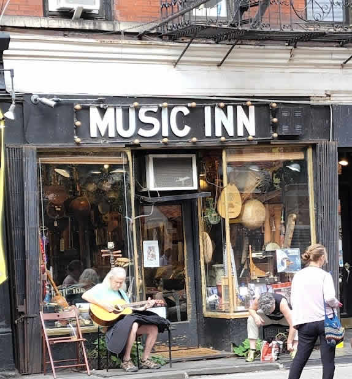

Image by Jack Mitchell, under CC BY-SA 4.0 license.
{kind=link}
Explore John Lennon's happiest place, New York City!
Visit John Lennon's homes in Greenwich Village and the Upper West Side, the Dakota. His Central Park memorial and peace garden, Strawberry Fields. Visit his studios, his favorite parks, Washington Square and Central Park, and his beloved neighborhoods. Experience John Lennon's pubs, guitar store, venues, hotels, drug store, his management office.
The thee hour tour visits at least two neighborhoods, four hours for two neighborhoods in depth, and maybe a district, Times Square, if we go fast. If we cover more than a single neighborhood, our transportation is additional. My hourly rate is for a group of any size. The smaller the group, the more intimate the experience.
We can go to more places, and extend the tour to eight hours!
We reminisce and take in pictures, quotes, and a couple of videos on my phone. Give this NYC John Lennon tour as a birthday gift. It is very special, memorable, and personal for your friend or loved one.
On many John Lennon birthday trips, including surprise tours, the guest of honor shares a lot about what John Lennon and the Beatles means and meant. Your loved one may want to drink in where John drank and ate, so we may not cover as much ground, which is cool. Believe me.
A splendid time is guaranteed for all.


